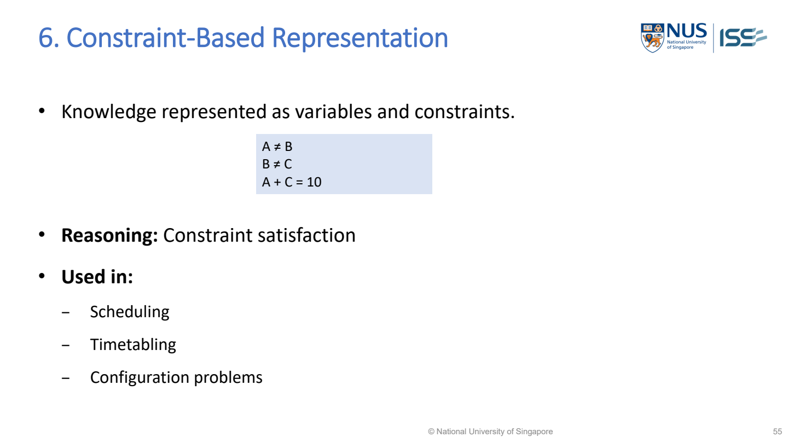

MR-29 CSP（Constraint Satisfaction Problem；約束滿足問題）: variables（變數）, domains（可選值集合）, constraints（約束條件） and backtracking（回溯法）
CSP = choose values for unknowns so the required rules hold. In an exam, identify what you must decide, what each decision may take, and what combinations are allowed.

MR-Day 2_JR_v1.pdf · PDF p.54 / printed slide 55. Original supplied slide, not redrawn.
Constraint-Based Representation
Open representation format, meaning and Used Cases →Read the question as three lists
| Component | Definition / exam question to ask | Lecture map-colouring example | Common confusion |
|---|---|---|---|
| Variable | An unknown decision to assign. “What must I choose for each object（客體；三元組終點）?” | SW, SE, NE, NW, CS: the colour of each region. | A colour is a value, not a variable. The region name labels（標籤；作比較的正確答案） the colour decision. |
| Domain | The allowed values for a variable. Domains need not be the same for every variable. | Each region initially has {red, green, blue}. | “Red” is one value; {red, green, blue} is the domain. Current remaining values can shrink after other assignments（賦值；為變數選定一個值）. |
| Constraint | A rule restricting one variable or a combination of variables. | Adjacent regions must differ, e.g. SW ≠ NW. | Listing colours does not express the adjacency rule. Some constraints concern one variable; others link several. |
- Lecture notation: V = variables; D = their domains; C = constraints.
- A constraint’s “scope” is the variables it concerns; its relation（關係；對象間的連結） states their allowed combinations.
- You can explain both in words: SW ≠ NW concerns SW and NW and forbids equal colours.
Exam extraction: underline decisions → list allowed values → translate “must / cannot / at most / exactly / if…then…” into rules. Keep fixed inputs (capacity, student numbers, existing availability) separate from unknown decisions.
Hard constraints（硬性約束） decide validity（推論有效性）; soft constraints（偏好約束） express preference
| Type | Meaning | Example | If violated |
|---|---|---|---|
| Hard | Mandatory for an acceptable solution. | Exams sharing students cannot run simultaneously; assigned room must have enough seats. | Reject the assignment. A nicer preference score cannot rescue it. |
| Soft | A desirable preference that can be traded off. | Prefer a morning exam; prefer fewer room changes. | The solution may remain valid, but receives a worse preference score. |
| Hard + soft together | First require all hard constraints; then rank（秩；矩陣獨立資訊的維度數） feasible（可行；符合所有硬性條件） assignments by soft preferences. | Among clash-free, adequately sized timetables, minimise unmet preferences. | Backtracking can find feasibility; the first feasible solution need not be preference-optimal. |
- Use the scenario’s meaning, not just one word: “prefer” usually signals（訊號） soft, but a stated compulsory requirement is hard.
- If the question is ambiguous, state your assumption（假設；答案依賴但題目未明說的條件）.
- Ordinary CSP asks for a valid assignment; adding soft scores creates an optimisation problem.
Source distinction: Day 1 pp.76–89 teaches CSP/backtracking using mandatory rules. The hard/soft contrast is a cross-lecture connection (Reasoning（推理） Systems day3.pdf p.53). The timetable below is an original teaching example, not copied lecture data.
Exam scenario: turn a story into a model
- Schedule exams A, B and C.
- Each can use 09:00 or 14:00.
- Room R1 has 80 seats; R2 has 40.
- A has 70 students; B and C have 30 each.
- A and B share students; no other pair does.
- A and B both prefer 09:00.
- Both rooms are available at both times.
| Extract | What to write |
|---|---|
| Variables | T_A, T_B, T_C = times; Room_A, Room_B, Room_C = rooms. Six decisions, not “the students” or “the timetable” without fields. |
| Time domains | Each time variable ∈ {09:00, 14:00}. |
| Room domains | Initially {R1,R2}; capacity reduces Room_A to {R1}. B and C retain both rooms. |
| Hard: shared students | T_A ≠ T_B. |
| Hard: no double-booking | For each pair: different times or different rooms. They may share a room at different times. |
| Hard: capacity | Capacity(assigned room) ≥ students in that exam. Capacity and student counts are fixed inputs. |
| Soft | Prefer T_A=09:00 and T_B=09:00. They cannot both be met because T_A ≠ T_B is hard. |
- A feasible answer: A at 09:00 in R1; B at 14:00 in R1; C at 14:00 in R2.
- All hard rules hold.
- B’s morning preference is unmet, so there is one unmet preference.
- With equally weighted morning preferences, at least one must be unmet; this attains that minimum.
An invalid answer: A and B both at 09:00, even in different rooms. It satisfies their preferences but violates the shared-student rule.
Count decisions before checking joint rules
Capacity filtering（濾波） removed R2 from A’s domain. The 32 combinations still need clash and room-sharing checks; this is not a count of feasible timetables.
Soft score: number of unmet morning preferences, to minimise among hard-feasible assignments. A weighted version sums stated preference weights（權重）; do not invent weights. This is a search objective, not a neural-network training（訓練） loss（損失函數；衡量預測錯誤）.
Use the lecture’s variable and value order
- Variables: SW → SE → NE → NW → CS.
- Values tried: R → G → B.
- The map’s adjacency pairs are SW–NW, SW–CS, SE–NE, SE–CS, NE–NW, NE–CS, NW–CS.
- SW and SE do not share an edge.
- Assign one variable at a time.
- If a value conflicts with an earlier assignment, try the next value.
- If no value works, undo the previous assignment and try its next value.
- Earlier unrelated choices stay in place.
SW=R, SE=R, NE=G, NW=B: CS touches all four, so R, G and B are all forbidden. The lecture shows this dead end (PDF p.80). The drawing is an adjacency schematic, not a geographic map.
What “backtrack further” means here
- With SW=R, SE=R, NE=G, NW=B, CS has no colour left.
- Undo NW=B. NW has no untried legal value: R clashes with SW, G clashes with NE, and B has already led to failure.
- Undo NE=G; try NE=B. NW can now be G, but that again leaves（葉節點；決策樹的最終輸出） CS with no colour.
- After exhausting NE’s values, undo SE=R; try SE=G. Continue with NE=R, NW=G, CS=B.
Undo assignments and restore domains. Once NW=B is removed, colours excluded only by that assignment become available again. Retain restrictions caused by assignments that are still present.
Full computed trace with early remaining-domain checks
| Step | Assignments retained | Action / reason |
|---|---|---|
| 1 | SW=R | Try SW=R. All unassigned regions still have a legal colour. |
| 2 | SW=R, SE=R | Try SE=R. All unassigned regions still have a legal colour. |
| 3 | SW=R, SE=R, NE=G | Try NE=G. All unassigned regions still have a legal colour. |
| 4 | SW=R, SE=R, NE=G, NW=B | Try NW=B. Dead end: CS has no legal colour. |
| 5 | SW=R, SE=R, NE=G | Undo NW=B; restore domains implied by the retained assignments. Try its next legal value; if none remains, go back again. |
| 6 | SW=R, SE=R | Undo NE=G; restore domains implied by the retained assignments. Try its next legal value; if none remains, go back again. |
| 7 | SW=R, SE=R, NE=B | Try NE=B. All unassigned regions still have a legal colour. |
| 8 | SW=R, SE=R, NE=B, NW=G | Try NW=G. Dead end: CS has no legal colour. |
| 9 | SW=R, SE=R, NE=B | Undo NW=G; restore domains implied by the retained assignments. Try its next legal value; if none remains, go back again. |
| 10 | SW=R, SE=R | Undo NE=B; restore domains implied by the retained assignments. Try its next legal value; if none remains, go back again. |
| 11 | SW=R | Undo SE=R; restore domains implied by the retained assignments. Try its next legal value; if none remains, go back again. |
| 12 | SW=R, SE=G | Try SE=G. All unassigned regions still have a legal colour. |
| 13 | SW=R, SE=G, NE=R | Try NE=R. All unassigned regions still have a legal colour. |
| 16 | SW=R, SE=G, NE=R, NW=G, CS=B | Complete: every neighbouring pair differs. This is a valid solution. |
The interactive trace checks remaining neighbour domains early, so it detects CS=empty before trying three doomed CS values. Plain backtracking could instead try and reject those values at CS; the reason for returning to an earlier decision is the same. MRV（Minimum Remaining Values；最少剩餘值） is not used in this fixed-order trace.
SW=R, SE=G, NE=R, NW=G, CS=B. Check every line: all seven pairs differ. This continuation is computed from the lecture map and stated orders; it is not presented as a copied slide answer.
Backtracking recipe you can write in an answer
solve(partial assignment):
if every variable is assigned: return solution
choose the next unassigned variable
for each value in its domain, in the stated order:
if it agrees with the assigned-variable constraints:
assign it
search the remaining variables
if a complete solution is found: return it
undo this assignment and restore any pruned domains
return failure to the previous decision- Failure at one branch does not mean（均值；平均數） the entire problem is impossible.
- Only exhausting all alternatives back to the root establishes no solution for the stated domains and constraints.
- Returning the first complete valid assignment solves feasibility, not necessarily the soft-preference optimum.
Another lecture formulation: four queens
- Variables: Q1, Q2, Q3, Q4; Qj is the row of the queen in column j.
- Domains: each Qj ∈ {1,2,3,4}.
- Hard constraints: different rows; no equal diagonal distance. Different columns are already guaranteed by one variable per column.
- Check a diagonal: queens in columns i and j attack if |Qi−Qj| = |i−j|. Absolute value means distance without sign.
- A valid assignment: [2,4,1,3]. Rows are all different, and no pair has equal row-distance and column-distance. This is a checked illustrative solution to the lecture’s N=4 task.
Map colouring, N-Queens and timetabling have different domains and rules. The reusable skill is identifying the decisions and rejecting incompatible assignments.
Plain English: “most constrained” versus “least constraining”
Remember just two questions: MRV = which variable next? Least constraining value（最少限制值） = which value first? Use them together: choose the variable with MRV, then order its values with LCV（Least Constraining Value）.
| Term | Easy meaning | What you choose |
|---|---|---|
| Constrained | Restricted by rules: having fewer legal choices left. “Most constrained” means the least freedom. | A variable. |
| Minimum remaining values (MRV) Also: most constrained variable（選擇最少的變數） / fail-first | Minimum = fewest; remaining = still allowed now; values = possible choices. Pick the unassigned variable with the fewest legal values left. | Which variable to assign next. |
| Constraining | Restricting other variables: a choice makes their options disappear. | The effect of a proposed value. |
| Least constraining value (LCV) | Least = smallest effect. Try the value that removes the fewest legal choices from the other unassigned variables. | Which value to try first for the chosen variable. |
Original teaching examples for the rules on MR-Day 1_JR_v1.pdf, PDF pp.83–84 (slides 88–89).
MRV example: assign the variable with only one legal choice
- A has {red, green, blue}; B has {red, green}; C has {blue}. All three are unassigned.
- Choose C: one legal value is fewer than two or three. Recalculate remaining domains after each assignment.
- Why? A restricted variable is more likely to expose a conflict early. Do the difficult decision first.
- Do not choose an already assigned variable. If an unassigned variable has zero legal values, the current branch has failed; backtrack.
LCV example: count what each choice removes from neighbours
Chosen variable X has {red, green}. Unassigned neighbours: Y has {red, blue}; Z has {red, green, blue}. Rules: X ≠ Y and X ≠ Z.
| Try for X | Y remaining | Z remaining | Values removed elsewhere |
|---|---|---|---|
| red | {blue} | {green, blue} | 2: red removed from Y and from Z. |
| green | {red, blue} | {red, blue} | 1: green removed only from Z. Y never contained green. |
- Try green first.
- It leaves four neighbour choices in total instead of three.
- This is a local ordering rule; it does not guarantee the best full solution.
- If tied, use the question’s stated tie-break order.
Connect the words to your TWO + TWO = FOUR slide
- The letter variables choose digits. AllDiff（所有值互異） means F, T, U, W, R, O must have different digits.
- X1, X2, X3 are carry variables: a carry is the extra 1 passed to the next column when a column sum reaches 10 or more.
- Each carry is 0 or 1 here. The lecture’s general digit domain {0,…,9} can be tightened using the addition rules.
- The result has four digits, so its leading digit F cannot be 0. Since F = X3, this forces F = X3 = 1.
- After that deduction（演繹；由前提按規則推出結論）, an unassigned F or X3 has one remaining value: a good MRV choice. If already assigned by propagation, skip it.
- AllDiff applies to the six letters, not to every carry. Carry values may repeat and may equal a letter’s digit.
This explains the slide’s notation and one forced deduction; it is not a claim to enumerate or solve the full cryptarithm. Source: Day 1 PDF p.85 / slide 90.
- Exam wording: “I choose C using MRV because it has the fewest currently legal values.
- For the selected variable, I try the least constraining value first because it removes the fewest choices from unassigned neighbours.”
- Do not mix them up: most constrained = a variable has few choices; least constraining = a value causes little restriction elsewhere.
- MRV counts remaining legal values, not how many constraint lines touch a variable.
When asked to improve or evaluate the solver
| Observed problem | Change | Why |
|---|---|---|
| Many choices before a tightly restricted variable fails | MRV / most constrained variable: choose the variable with fewest currently legal values. | Expose likely failure sooner. MRV chooses a variable, not its value. |
| A value removes most of its neighbours’ choices | Least constraining value: try the value ruling out the fewest remaining values elsewhere. | Preserve flexibility; this does not mean “smallest number” or “best soft score”. |
| Failure only discovered deep in the tree | Check/propagate domain restrictions after assignment; backtrack when a domain is empty. | Stop exploring a branch that cannot be completed. |
| Solver returns the wrong “best” schedule | Separate hard feasibility from the soft objective; compare feasible alternatives if optimality（最優性） is required. | The first solution may be valid but preference-poor. |
- Evaluate: completeness（完備性） of assignments, domain membership（隸屬度）, every hard constraint, then soft score if present; measure visited nodes/backtracks/runtime for efficiency.
- Finite-domain exhaustive backtracking can find a solution or establish none, but may take exponential time.
- Good ordering and sound pruning（剪枝） improve effort, not the definition of validity.
- Before search: check missing/contradictory requirements, remove genuinely unavailable values, and distinguish fixed data from decisions.
- Do not shrink a domain merely because a value is unpopular.
- CSP backtracking has no learned weights to overfit; its main risks are a wrong model, incomplete search and poor computational efficiency.
- Compared with A* / Dijkstra: those examples prioritise route cost; CSP emphasises compatible assignments.
- Backtracking is a depth-first search（深度優先搜尋） of partial assignments with constraint checks.
- CSP can be viewed as a search problem（搜尋問題）; it is not a separate claim that all problems require a different AI（Artificial Intelligence；人工智慧） model.